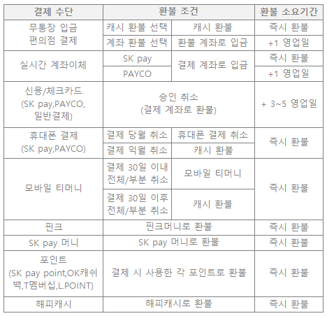

FAQ
자주하시는 질문
- top5
- 배송
- 취소/반품
- 영수증/증빙
주문한 상품의 배송 상태가 배송완료로 확인되지만, 실제로 상품을 못 받으셨다면
마이페이지 > 주문/배송 > 주문 상세에서 상품미도착으로 접수해주세요.
판매자가 접수 내용 확인 후 처리 결과를 등록하면 주문 상세에서 답변 내용을 확인하실 수 있습니다.
주문 시 사용하신 결제 수단 별로 환불기간이 다릅니다. 결제 수단 별 상세한 환불기간은 아래 표를 참고해 주세요. 
결제영수증이란 결제가 완료되었음을 증명하는 영수증으로 상품 주문 후 출력 가능합니다.
PC > 마이페이지 > 주문/배송에서 영수증 출력이 필요한 주문 건의 상세보기 선택 후 오른쪽 상단 '결제영수증 출력' 클릭 후 인쇄해 주세요.
※ 결제영수증 등 증빙자료의 경우 모바일에서는 지원하지 않으므로 PC로 확인해 주세요.
교환/반품은 배송 완료 후 7일 이내 접수 가능합니다. 기한 경과 후 교환/반품이 필요하다면 판매자에게 문의해 주세요. 기한 경과 후 판매자와 협의 없이 임의로 판매자에게 상품을 발송하는 경우 교환/반품이 거절될 수 있습니다.
판매자가 빠른 발송 처리를 위해 송장을 먼저 등록하는 경우가 있습니다. 송장번호가 등록된 후 보통 당일 저녁에 상품이 배송 업체로 전달되며 다음날 오전부터 조회 가능합니다. 만약, 송장 번호가 등록된 후 장시간이 지나도록 배송 추적이 되지 않는다면, 고객센터로 연락하여 상품의 발송 여부를 확인해 주세요.
>>궁금증이 해결되지 않으셨다면
문의하기